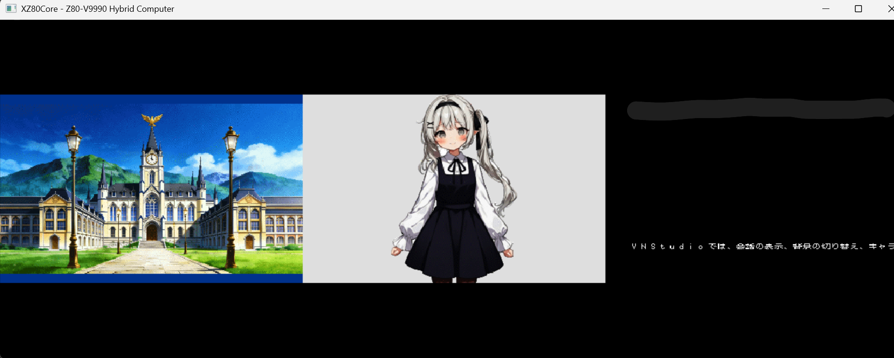
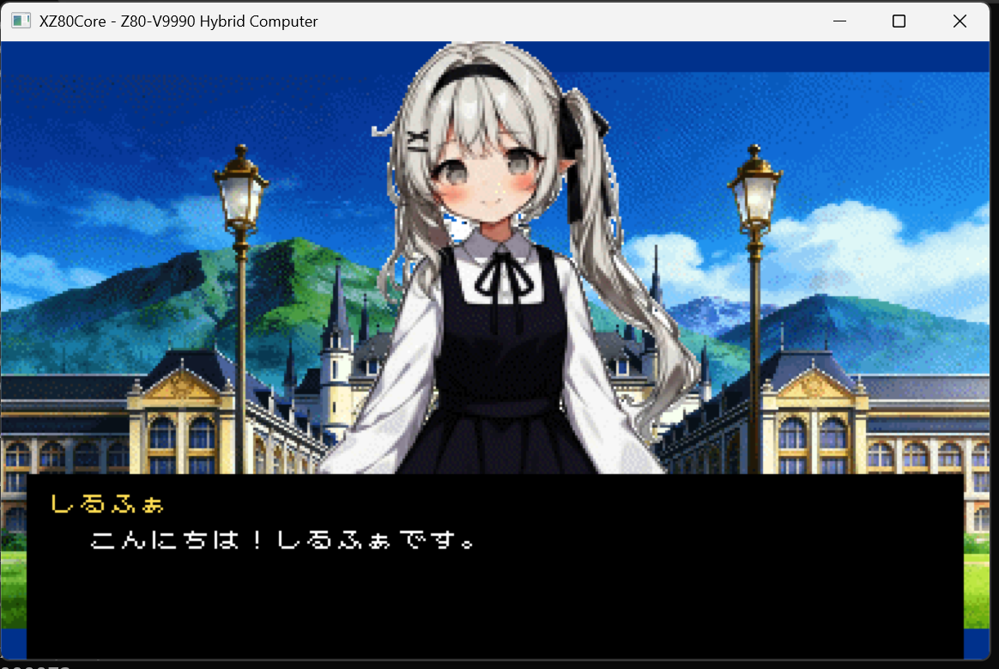

はじめに——構想から、実装へ
Vol.7で「夢のマシン」の構想を語り、 Vol.8で具体的な設計方針を示した。 そして今、その夢が——ソフトウェアの中で——動き始めた。
XZ80 VM（バーチャルマシン）の基本実装が完了し、 現在はミドルウェア層の開発へと進んでいる。 今回は、その進捗をお伝えするとともに、 XZ80の心臓部であるコアアーキテクチャと、 V9990のレジスタ構成について技術的な解説を交えて記録したい。
第1章：XZ80コアの基本構成——二つの世界を繋ぐもの
XZ80 VMは、大きく分けて二つのレイヤーで構成されている。
一つは、Z80 CPUコア。 1976年に生まれた8ビットプロセッサを、高速クロックでエミュレーションする。 命令セットは完全互換——かつてX1やMSXの上で動いたZ80アセンブラのプログラムが、 そのままこのVMの上でも動く。
もう一つは、V9990 VDP（Video Display Processor）。 ヤマハが次世代MSX用として開発しながらも、 正式採用されることなく幻に終わったビデオチップを、 ソフトウェアでエミュレーションする。
この二つをI/Oポートマッピングで接続する。 Z80はI/Oポートを通じてV9990のレジスタにアクセスし、 描画コマンドの発行、パレットの設定、スクロール座標の制御を行う。 まるで本物のハードウェアのように、CPUとVDPが対話しながら画面を構築していく。
- CPU — Z80コア（高速クロック・命令セット完全互換）
- VDP — V9990エミュレーション（I/Oポート経由でアクセス）
- メモリ — 4MBメインRAM + 512KB VRAM
- 接続 — I/Oポートマッピングによるハードウェア抽象化
第2章：V9990——幻のVDPの全貌
V9990を正しくエミュレーションするためには、 そのレジスタ構成を深く理解する必要がある。 ここでは、実装にあたって向き合ったV9990の主要レジスタ群を紹介したい。
スクリーンモードレジスタ
V9990は、複数のスクリーンモードをサポートしている。 解像度と色数の組み合わせにより、用途に応じた画面構成を選択できる。
- P1モード — 256×212、パターンベース（タイル＋スプライト向き）
- P2モード — 512×212、高解像度パターンモード
- B1〜B7モード — ビットマップモード（2色〜32768色）
XZ80では主にビットマップモードを活用し、 ビジュアルノベルの背景表示やキャラクター描画に使用している。 256色モードでは1ピクセル1バイト、32768色モードでは1ピクセル2バイトとなり、 VRAMの使い方もモードによって大きく変わる。
パレットレジスタ
V9990のパレットは、RGB各6ビット（計18ビット）で定義される。 32,768色の中から、モードに応じた色数をパレットとして選択する仕組みだ。
パレットへのアクセスは、ポート番号を通じたシーケンシャルな書き込みで行う。 R、G、Bの順に3バイトを連続して書き込むことで、1色分のパレットエントリが設定される。 この手続き的なインターフェースは、まさにレトロハードウェアならではの流儀だ。
コマンドレジスタ
V9990の真価は、ハードウェアコマンドにある。 矩形転送、線描画、矩形塗りつぶし——これらの描画処理をCPUではなく VDP自身が実行する。
# V9990 描画コマンドの概念（擬似コード）
# 矩形転送（VRAM内コピー）
SET_CMD_REG SX=0, SY=0 # 転送元座標
SET_CMD_REG DX=128, DY=64 # 転送先座標
SET_CMD_REG NX=64, NY=48 # 転送サイズ
EXECUTE LMMM # 論理VRAM→VRAMメモリ転送Z80のような低速CPUにとって、このハードウェアコマンドは強力な味方となる。 ピクセル単位のコピーをCPUが一つずつ実行する必要がなく、 コマンドレジスタに座標とサイズを書き込んで実行指示を出すだけで、 VDPが自律的に高速描画を行う。
CPUは「何を描くか」を指示し、VDPが「どう描くか」を引き受ける。
この役割分担こそが、8ビットマシンで豊かな映像表現を可能にする鍵だ。
第3章：動いた——3画面モードと1画面モード
そして今、実際にVMが動作している画面をお見せできる段階に至った。
Vol.8で設計した 3つのV9990によるマルチ画面構成——その両方のモードが、 VM上で正常に動作していることを確認した。
3画面モード
3つのV9990の出力を横に並べた、ダライアスを彷彿とさせるワイド構成。 各V9990が独立した描画領域を持ち、それぞれが異なる背景やスプライトを担当できる。 横スクロールシューティングにおける広大な戦場の表現など、 かつてのアーケードでしか味わえなかった没入感を実現する構成だ。

1画面モード
3つのV9990の出力を一つのディスプレイに重ね合わせるモード。 256色や32768色での多層背景が実現でき、 ビジュアルノベルのような演出重視のコンテンツに適している。 背景レイヤー、キャラクターレイヤー、エフェクトレイヤーを それぞれ別のV9990が担当し、リッチな画面合成を行う。

設計書の上では「こう動くはず」だったものが、 画面の中で実際に色を発し、ピクセルを並べ、意図どおりの映像を描き出している。
第4章：ミドルウェアへ——VMの上に「世界」を載せる
VMの基本実装が完了した今、次のフェーズはミドルウェア層の構築だ。
ミドルウェアとは、ハードウェア（VMコア）とアプリケーション（ゲームやビジュアルノベル）の間を繋ぐ、 いわば「土台」のような存在だ。 OS——とまではいかないが、BIOSや基本ライブラリに相当する機能群を、 Z80アセンブラとCで実装していく。
- BIOS — 画面モードの初期化、パレット設定、基本I/O
- 描画ライブラリ — V9990コマンドをラップした高レベル描画API
- フォントドライバ — 美咲フォントによる日本語テキスト描画
- リソースローダー — バンク切り替えを活用したアセット読み込み
このミドルウェアが完成すれば、VNStudioのスクリプトエンジンをその上に載せ、 Vol.5で語った「Write Once, Play Anywhere」—— 同じスクリプトがUnityでもZ80でも動く——という夢に、いよいよ手が届く。
VMコアは「心臓」。ミドルウェアは「骨格」。
その上にスクリプトエンジンという「魂」を宿すとき、
夢のマシンは本当の意味で目を覚ます。
おわりに——夢は、動いてこそ夢になる
設計書に書かれた仕様は、まだ「約束」でしかない。 コードとして動き、画面にピクセルが灯り、意図した通りの映像が映し出された瞬間に、 はじめてそれは「実現」になる。
XZ80のVMコアが動いた——それは、 Vol.7の結びで「もうじっとしていられなくなった」と書いたあの衝動が、 一つの具体的な到達点を得たということだ。
だが、ここがゴールではない。 ミドルウェアの実装、VNStudioスクリプトエンジンの移植、 そしてその先に待つRS Studioへの発展——。 描くべき道のりは、まだ長い。
けれど、動いている画面を見つめながら、確信する。
この道の先に、確かに「あの夢」がある。
一歩ずつ、着実に。